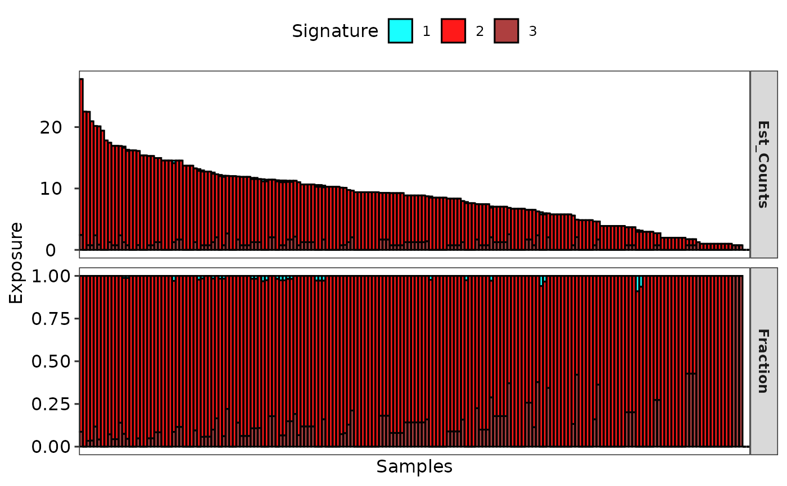
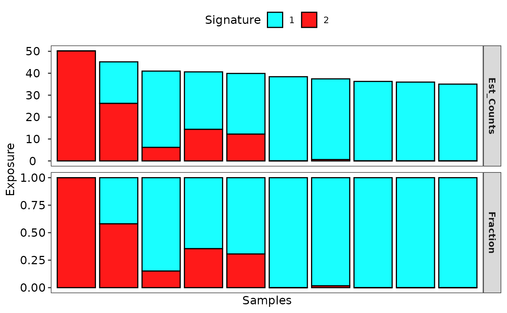

Currently support copy number signatures and mutational signatures.
show_sig_exposure(
Signature,
sig_names = NULL,
groups = NULL,
grp_order = NULL,
grp_size = NULL,
samps = NULL,
cutoff = NULL,
style = c("default", "cosmic"),
palette = use_color_style(style),
base_size = 12,
font_scale = 1,
rm_space = FALSE,
rm_grid_line = TRUE,
rm_panel_border = FALSE,
hide_samps = TRUE,
legend_position = "top"
)a Signature object obtained either from sig_extract or sig_auto_extract,
or just a raw absolute exposure matrix with column representing samples (patients) and row
representing signatures (signature names must end with different digital numbers,
e.g. Sig1, Sig10, x12). If you named signatures with letters,
you can specify them by sig_names parameter.
set name of signatures, can be a character vector.
sample groups, default is NULL.
order of groups, default is NULL.
font size of groups.
sample vector to filter samples or sort samples, default is NULL.
a cutoff value to remove hyper-mutated samples.
plot style, one of 'default' and 'cosmic', works when
parameter set_gradient_color is FALSE.
palette used to plot, default use a built-in palette
according to parameter style.
overall font size.
a number used to set font scale.
default is FALSE. If TRUE, it will remove border color
and expand the bar width to 1. This is useful when the sample size is big.
default is FALSE, if TRUE, remove grid lines of plot.
default is TRUE for style 'cosmic',
remove panel border to keep plot tight.
if TRUE, hide sample names.
position of legend, default is 'top'.
a ggplot object
# \donttest{
# Load mutational signature
load(system.file("extdata", "toy_mutational_signature.RData",
package = "sigminer", mustWork = TRUE
))
# Show signature exposure
p1 <- show_sig_exposure(sig2)
p1

# Load copy number signature
load(system.file("extdata", "toy_copynumber_signature_by_W.RData",
package = "sigminer", mustWork = TRUE
))
# Show signature exposure
p2 <- show_sig_exposure(sig)
p2

# }